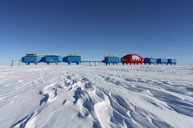
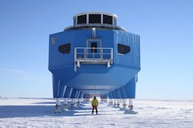

The history of the British Antarctic Survey

British Antarctic Survey (BAS) is a component of the Natural Environment Research Council (NERC). Based in Cambridge, United Kingdom, it has, for over 60 years, undertaken the majority of Britain's scientific research on and around the Antarctic continent. British Antarctic Survey (BAS) is a component of the Natural Environment Research Council (NERC). Based in Cambridge, United Kingdom, it has, for over 60 years, undertaken the majority of Britain's scientific research on and around the Antarctic continent.
The British Antarctic Survey

British Antarctic Survey (BAS) is a component of the Natural Environment Research Council (NERC). Based in Cambridge, United Kingdom, it has, for over 60 years, undertaken the majority of Britain's scientific research on and around the Antarctic continent. British Antarctic Survey (BAS) is a component of the Natural Environment Research Council (NERC). Based in Cambridge, United Kingdom, it has, for over 60 years, undertaken the majority of Britain's scientific research on and around the Antarctic continent.
Grid original idea by http://builtbyboon.com/blog/proportional-grids
Content copyright Ant Dubber, PR, Sam Burrel, British Antarctic Survey, guardian.co.uk. Aenean lacinia bibendum nulla sed consectetur. Donec sed odio dui. Donec sed odio dui. Cras mattis consectetur purus sit amet fermentum. Duis mollis, est non commodo luctus, nisi erat porttitor ligula, eget lacinia odio sem nec elit. Etiam porta sem malesuada magna mollis euismod. Fusce dapibus, tellus ac cursus commodo, tortor mauris condimentum nibh, ut fermentum massa justo sit amet risus. Maecenas faucibus mollis interdum. Duis mollis, est non commodo luctus, nisi erat porttitor ligula, eget lacinia odio sem nec elit. Aenean eu leo quam. Pellentesque ornare sem lacinia quam venenatis vestibulum. Maecenas faucibus mollis interdum. Cras mattis consectetur purus sit amet fermentum. Vivamus sagittis lacus vel augue laoreet rutrum faucibus dolor auctor. Vivamus sagittis lacus vel augue laoreet rutrum faucibus dolor auctor. Nullam quis risus eget urna mollis ornare vel eu leo. Etiam porta sem malesuada magna mollis euismod. Vivamus sagittis lacus vel augue laoreet rutrum faucibus dolor auctor. Cras justo odio, dapibus ac facilisis in, egestas eget quam. Vestibulum id ligula porta felis euismod semper. Duis mollis, est non commodo luctus, nisi erat porttitor ligula, eget lacinia odio sem nec elit. Nulla vitae elit libero, a pharetra augue. Cras justo odio, dapibus ac facilisis in, egestas eget quam. Cum sociis natoque penatibus et magnis dis parturient montes, nascetur ridiculus mus.